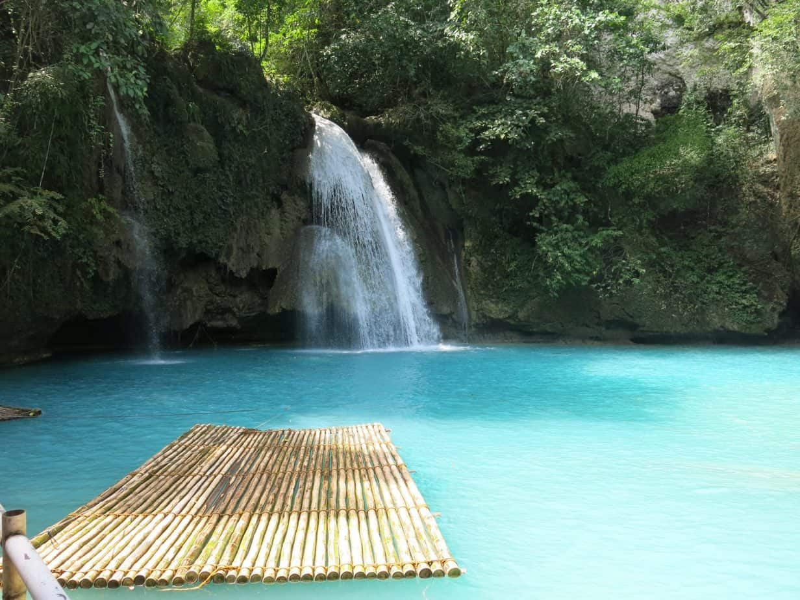
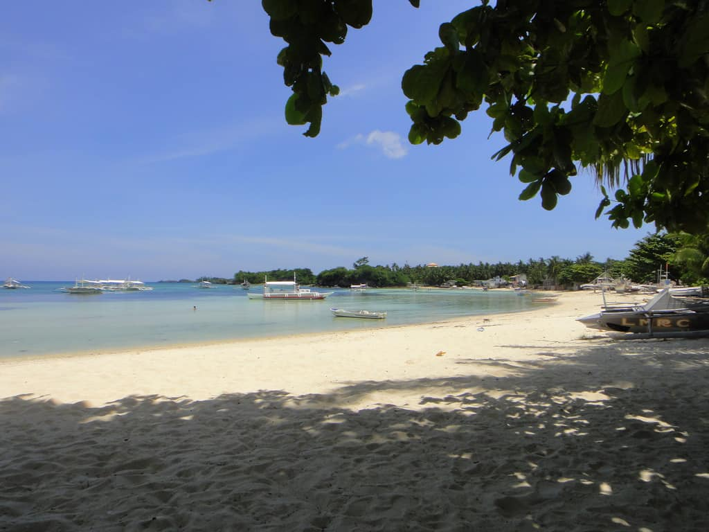
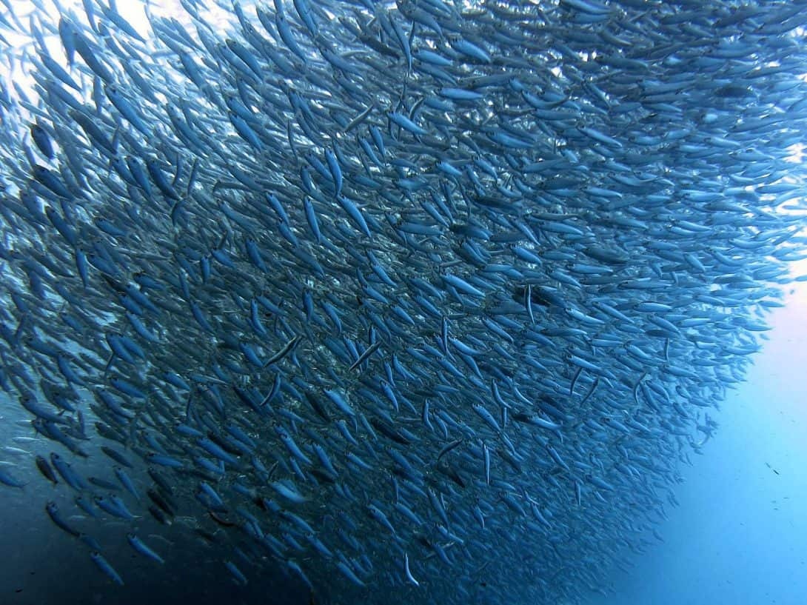

Cebu, Philippines - Traveller's Guide
10.1.2018
When travellers first arrive in Cebu, they can be forgiven for thinking that they have arrived in an overcrowded and traffic-congested Filipino city. With stunning tropical beaches and islands beckoning just offshore, it is understandable that people will want to skip by Cebu City and the greater island as fast as they can! However, take the time to explore Cebu and you will find a few unique cultural treasures up its sleeve! And before you make a sprint for the ferry port, don’t forget the famous diving Mecca of Moalboal in the south…
Further south, you will find the unassuming beach town of Moalboal, which is around a 2.5-hour drive from Cebu Main airport. Diving and snorkelling are the order of the day here with crystal clear waters and beautiful coral reefs, with the most celebrated being at nearby Pescador Island. The main Panagsama Beach is lined with bars, restaurants and accommodation suitable for the backpacker budget. Inland there are some amazing treasures to explore such as the beautiful Kawasan Waterfall…
There are no less than 167 islands that surround the main island of Cebu, making up the gorgeous, tropical Visayas Islands. If the heat in the city gets too much for you and shopping malls just ain’t your thang, just a boat ride away you will find deserted beaches and swaying palm trees on Robinson Crusoe style islands. Malapascua (voted one of the 50 top islands in Southeast Asia!), Bohol, Panglao, Siquijor and Bantayan Island are some popular retreats amongst backpackers!
Moalboal is world famous throughout the Philippines and Southeast Asia for its incredible underwater life and the small area has many dive schools which offer a variety of courses from beginner to advanced. The big attraction here is the ‘sardine run’ – huge shoals of sardines that can be seen all year round. Moalboal’s white sandy beaches, clear waters and abundant coral reefs will have your mouth watering and the best news is that the diving here is very affordable for budget travellers!